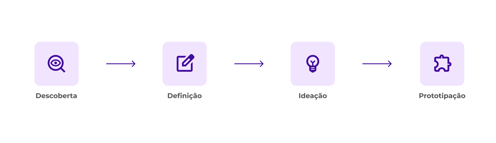
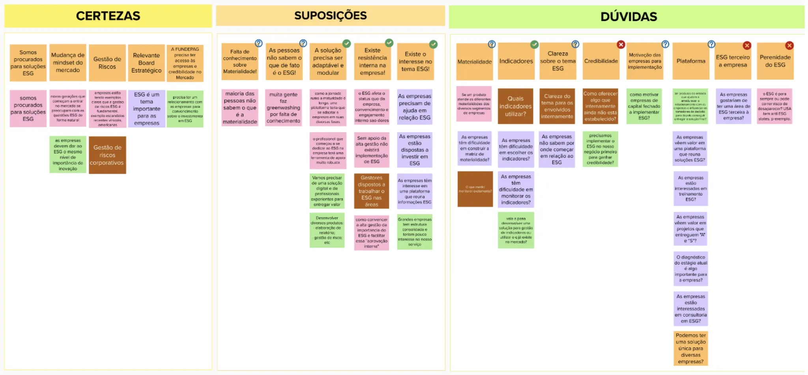
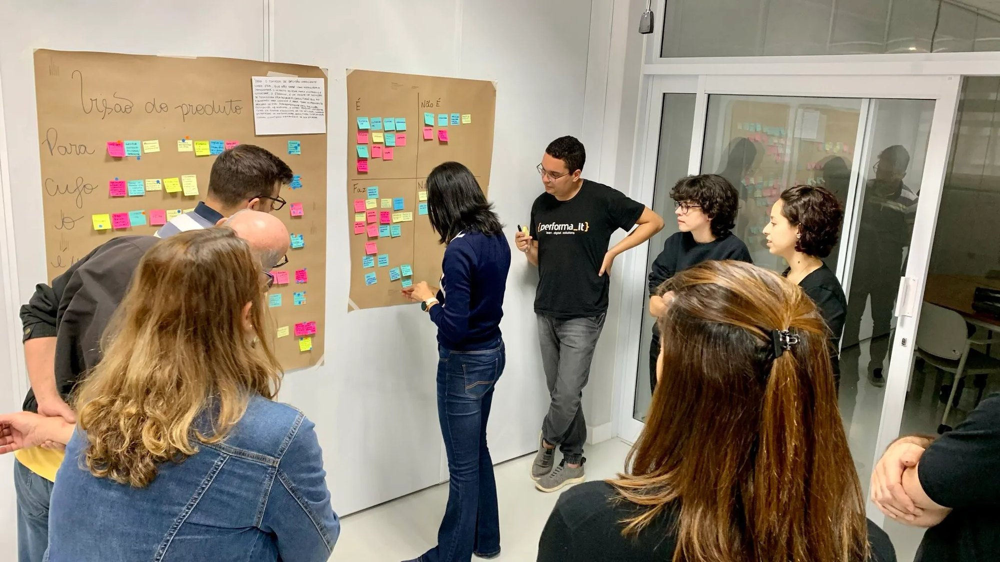
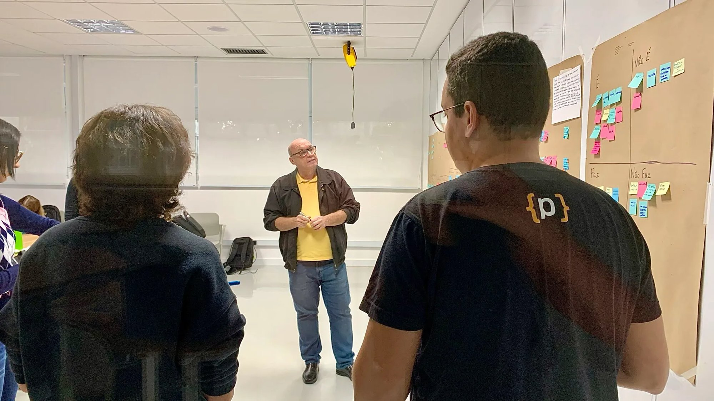
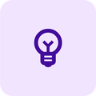
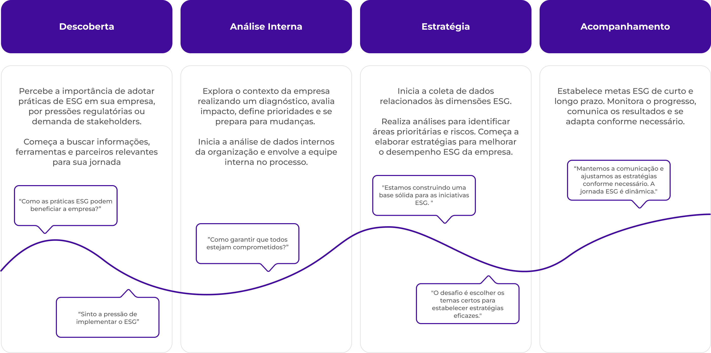
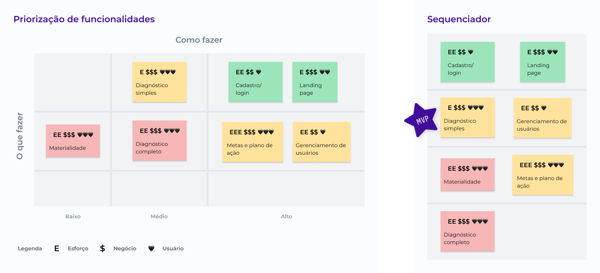
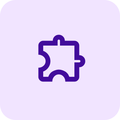
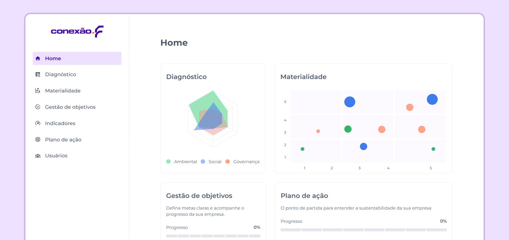

- Blog
- Plataforma ESG
Plataforma ESG: estratégia, processo e impacto

Projeto
O cliente precisava de uma solução para apoiar empresas na implantação de práticas ESG. O projeto envolveu imersão, entrevistas e definição colaborativa de funcionalidades, resultando em uma plataforma para diagnóstico, gestão de temas materiais e metas.
Time
- Juliana Amorim - Chapter Lead
- Luiza Tavares - Business & Service Designer
- Malu Sousa - UX UI Designer
Processo de design

Descoberta
Iniciamos a fase de descoberta com uma mentoria sobre ESG e durante duas semanas, entrevistamos consultores e profissionais do setor, identificando desafios como engajamento cultural, falta de ferramentas especializadas e resistência a investimentos.

Definição
O workshop de Lean Inception representa um marco essencial na jornada do projeto, desdobrando-se ao longo de uma semana de imersão. Ao longo dessa semana, a equipe guiou o cliente por um processo estruturado para a construção do produto ideal de maneira colaborativa, oferecendo uma visão compartilhada e fundamentada para as próximas fases.



Ideação
Com a visão de produto definida, iniciamos a ideação para estruturar o que seria desenvolvido.
Nessa etapa, criamos as personas, mapeamos a jornada do usuário e definimos as funcionalidades essenciais para a plataforma.
Personas
Edson
Profissional de empresa de pequeno/médio porte e única pessoa responsável por sustentabilidade.
Ações: Cumpre obrigações legais, possui pouco conhecimento em ESG e usa Excel.
Desafios e Preocupações: Além da preocupação com a reputação da empresa, Edson está perdendo clientes por não se adequar ao ESG. Ele enfrenta a dificuldade de acesso limitado a informações da empresa e deseja expandir para novos mercados.
Silvia
Faz parte de um time ou comitê de ESG em uma empresa de grande porte com mais de 50 anos no mercado.
Ações: Tem iniciativas e projetos de ESG, capta investimentos, é pressionada pelo mercado para cumprir práticas ESG e emite relatório de sustentabilidade.
Desafios e Preocupações: Enfrenta dificuldades em monitorar fornecedores e engajar colaboradores. Busca certificações, mas enfrenta desafios na mensuração do impacto de suas ações.
Gabriela
Consultora especialista em ESG, trabalha na área há mais de 10 anos.
Ações: Atende empresas de pequeno e médio porte de diversos segmentos, se comunica com várias áreas dentro da empresa que atende, entrega relatórios e apresenta resultados de seus estudos.
Desafios e Preocupações: Gabriela enfrenta dificuldades em mudar a cultura e o mindset da empresa. Ela lida com acesso limitado a informações internas e enfrenta o desafio de influenciar os tomadores de decisão para ir além do mínimo.
Jornada da pessoa usuária
Realizamos uma dinâmica com o cliente e desenhamos a jornada de experiência que esperamos para o produto.

Revisão técnica e sequenciador
Classificamos o valor para o negócio, usuário e esforço de desenvolvimento. Utilizamos o sequenciador para ordenar funcionalidades essenciais que precisam ser entregues inicialmente no MVP.


Design
Após o alinhamento estratégico com o cliente, iniciamos a etapa de design, abordando o fluxo de navegação, o guia de estilo, o desenho da interface, a prototipação em alta fidelidade e os testes de usabilidade.
Para acompanhar o desenvolvimento visual completo do projeto, acesse a página de apresentação:

Veja o projeto completo
Conheça o processo de design visual da plataforma ESG.